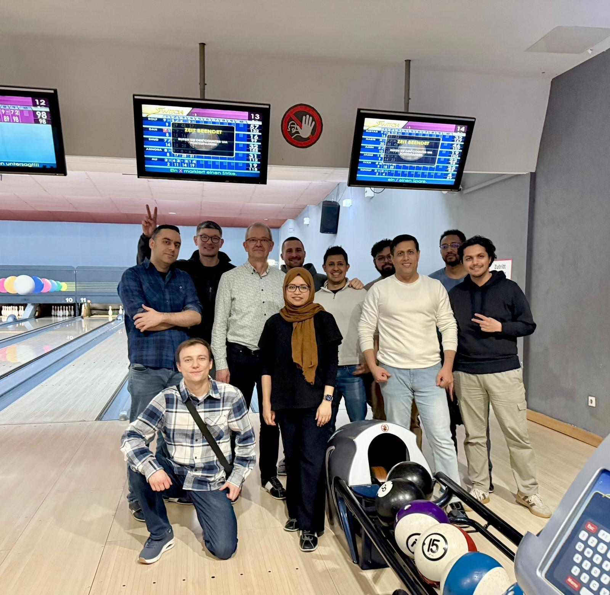
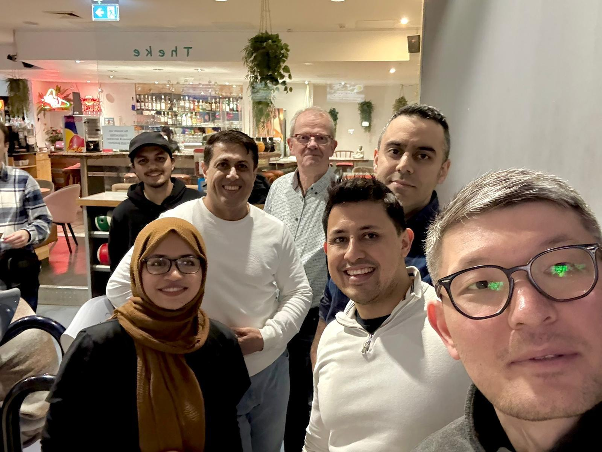
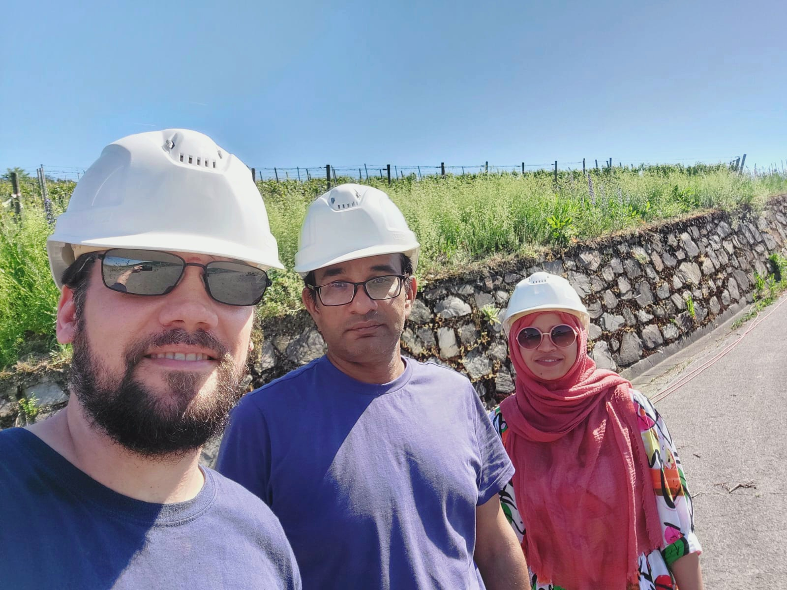
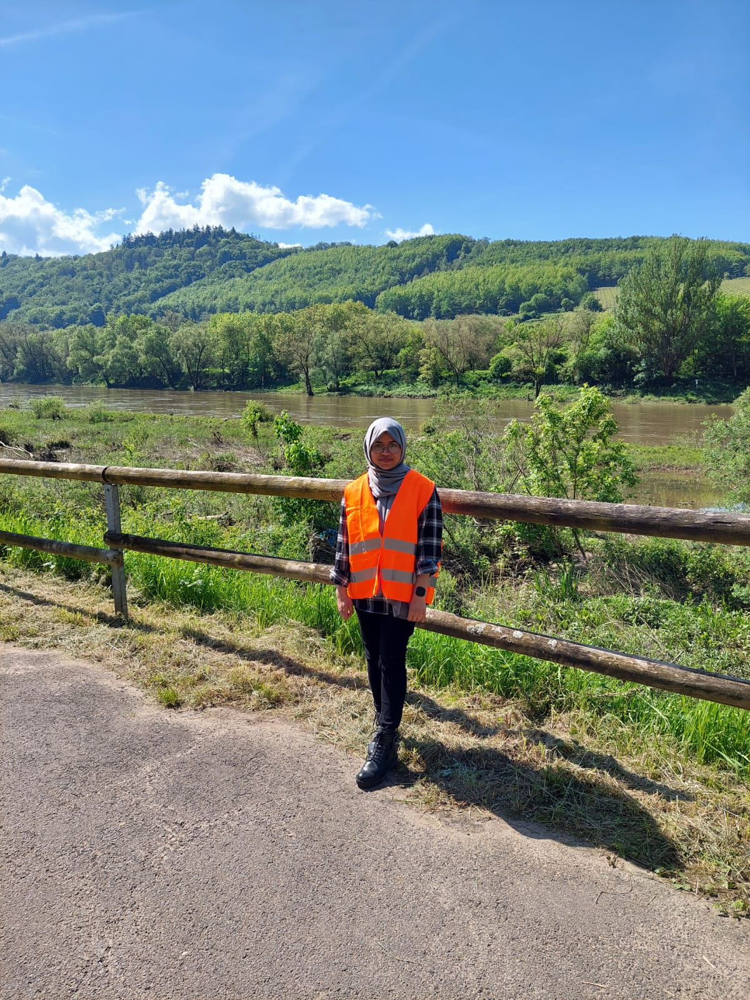
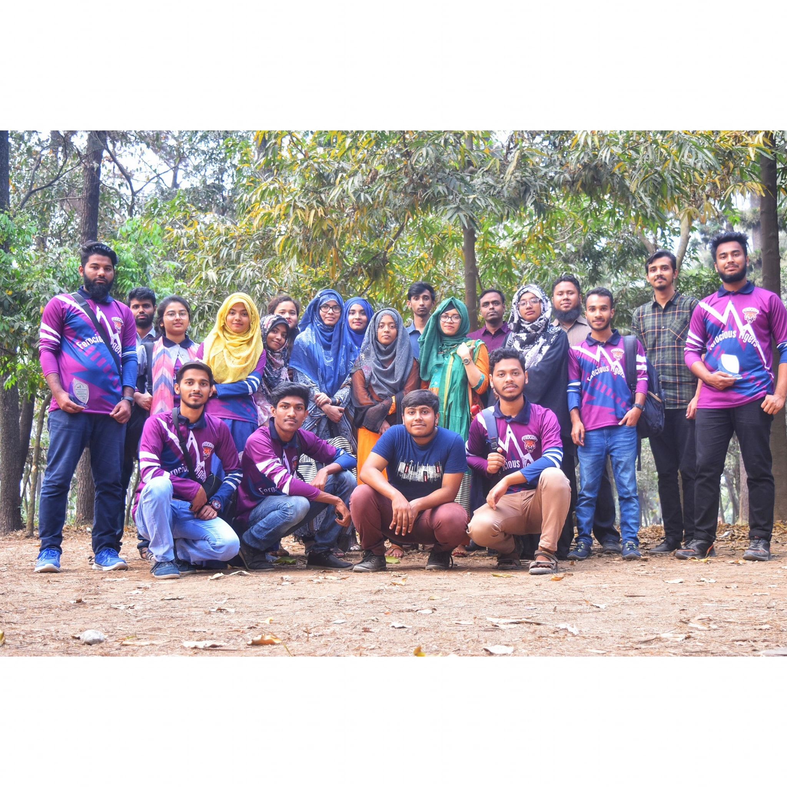
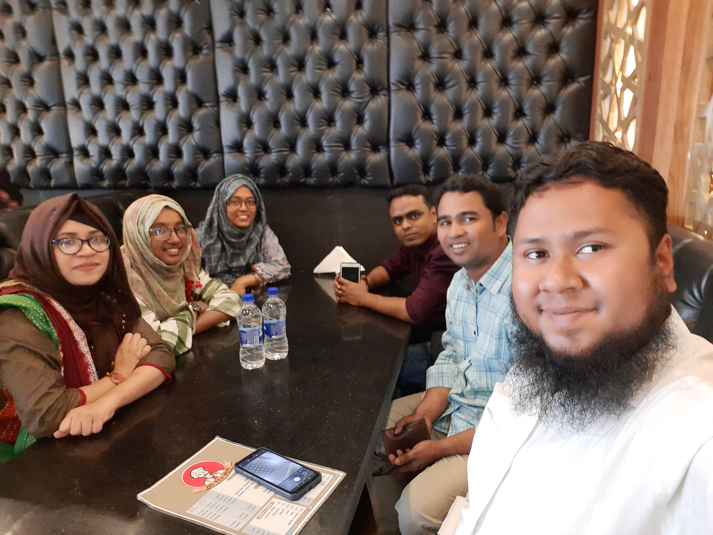

§1
Where I've worked
Click a role to see responsibilities, photos, and the tools involved.
Aug 2024 — Present · Dortmund, Germany
Research Associate — 5G Protocol Analysis and RF Validation Engineer
FH Dortmund, Institute of Computer Science · EU research consortium
- Requirement analysis against 3GPP 5G standards for predictive QoS modelling and resource optimisation.
- Coordinated integration and testing of private 5G infrastructure, including UE onboarding and LIPA-based local breakout for ultra-low-latency applications.
- Load-tested 5G base stations and UEs across UL/DL and TDD configurations; benchmarked Open5GS, UERANSIM, and O-RAN RIC concepts.
Open5GSUERANSIMO-RAN / RIC3GPP 5G Standards


Apr 2024 — Jul 2024 · Koblenz, Germany
Research Associate — RF Validation Engineer
University of Koblenz, Institute of Computer Science · Project: NoLa
- Field-tested a 5G campus network across a steep vineyard, evaluating application-layer KPIs.
- Presented posters at AgrarWinterTage 2024 (Mainz); results later published at IEEE WoWMoM 2025.
5G Campus NetworkField KPI TestingIEEE WoWMoM 2025


Apr 2023 — Mar 2024 · Aachen, Germany
Student Assistant
Fraunhofer Institute for Production Technology IPT · Project: 6G-ANNA (BMBF)
- Deployed a GPS simulator and SDR to automate time-sync with 5G basebands — improved synchronisation accuracy by 15% at an industrial mining site.
- Ran a mobile private 5G system across 3 industry fairs with zero downtime.
- Redesigned industrial 5G traffic data storage, cutting retrieval time by 30%.
GPS SimulatorSDRPrivate 5G
May 2022 — Mar 2023 · Bonn, Germany
Working Student
brown-iposs GmbH · Project: 5G CampusOS (BMWK)
- 4G/5G walk tests capturing real-world KPIs for 5G Standalone deployment optimisation.
- Implemented a 5G Location Management Function (LMF) for indoor positioning R&D.
R&S ROMES45G StandaloneLMF
Nov 2019 — Apr 2021 · Dhaka, Bangladesh
Lecturer — Computer Science & Engineering
Ahsanullah Institute of Information and Technology (AIICT) · Faculty
- Taught Digital Signal Processing, Computer Networks, and Network Security.
- Supervised 25+ students in coursework and research on wireless communication and network security.
Digital Signal ProcessingComputer NetworksNetwork Security



Jul 2018 — Dec 2018 · Khulna, Bangladesh
Graduate Teaching Assistant — ECE
Khulna University of Engineering and Technology (KUET) · Faculty
- Assisted Digital Communication, Satellite Communication, and RADAR Systems labs.
- Mentored students in signal-transmission projects.
Digital CommunicationSatellite CommunicationRADAR Systems